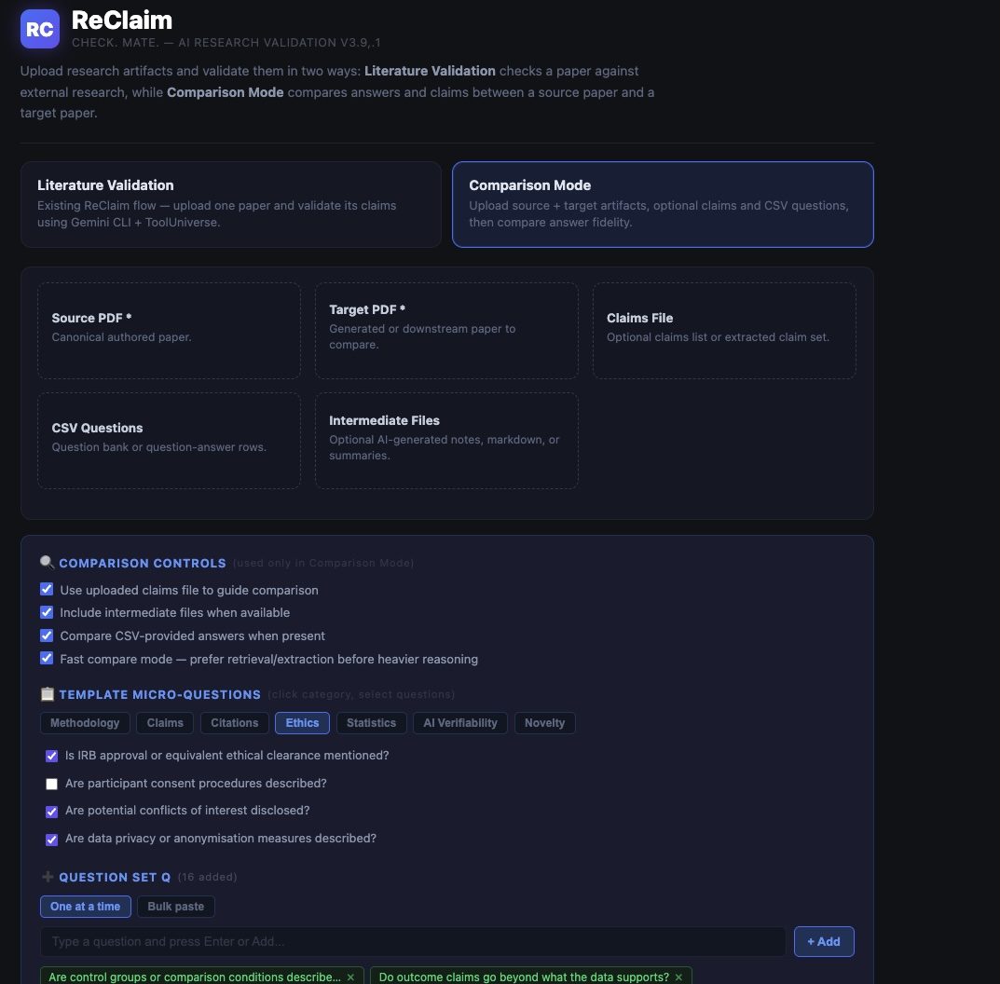
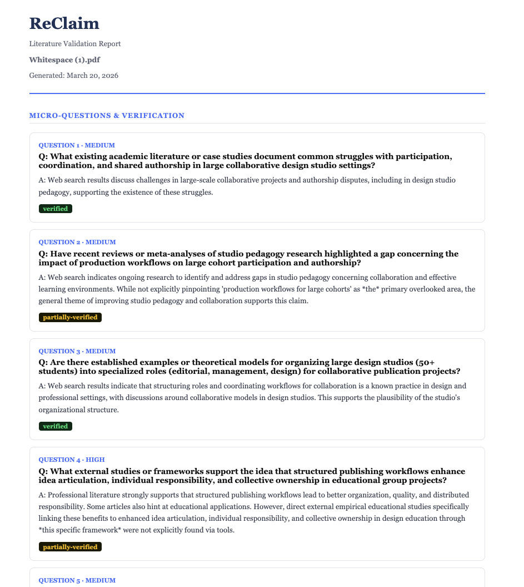
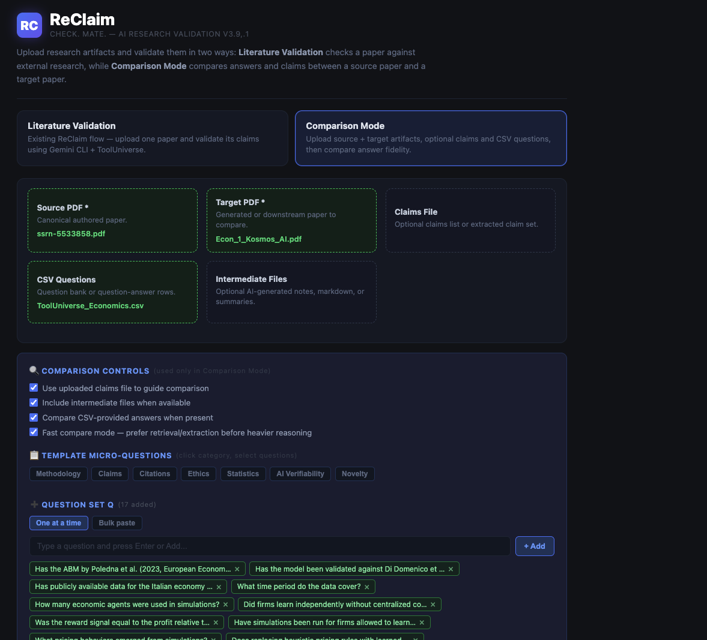
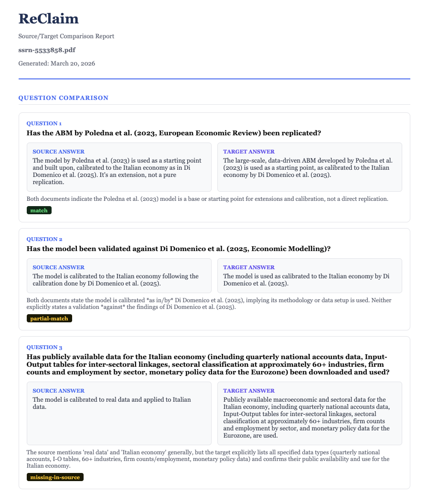

Research Validation · March 2026
ReClaim
AI Science Validation. Research Inquiry. Claim Comparison.
The first tool that asks AI to verify what it claims to know — and tells you honestly when it can't.
Open source
arcsphere/reclaim
Why this matters
AI confidently answers.
Nobody checks.
Every AI tool generates plausible-sounding answers about research.
ReClaim is built on one finding: across 19 experimental runs, AI claimed to answer 58% of micro-questions about a research paper. It actually answered 35%.
The gap between what AI claims and what it verifies is the problem ReClaim solves.
What this is not
Not a summariser.
Not a chatbot.
Not a PDF chat tool
Not a summariser
Not a RAG pipeline
Not a hallucination detector
ReClaim uses 900+ live scientific tools — PubMed, ArXiv, Semantic Scholar — to independently verify claims.
It explicitly flags what AI cannot verify. Honesty about limitations is a feature, not a bug.
Live tool verification
Honest unverifiable flags
Source vs target comparison
Product · In action
See it work.

Claim decomposition

Live verification

Gap analysis

Unverifiable flagging
Competitive landscape · Web-backed research
Tools exist.
This approach doesn't.
| Tool |
What it does |
Live source
verification |
AI self-audit
(claim vs actual) |
Unverifiable
flagging |
| Scite.ai |
Classifies 1.6B+ citations as supporting/contrasting across 280M sources |
✓ |
✗ |
✗ |
| Elicit |
Semantic paper search with data extraction and sentence-level citations |
✓ |
✗ |
✗ |
| SemanticCite |
Verifies citation accuracy via full-text analysis with 4-class classification |
◔ |
✗ |
◔ |
| GPTZero Sources |
Detects claims in text and finds supporting/contradicting web sources |
✓ |
✗ |
✗ |
| Opscidia Science Checker |
Checks health claims against 3M PubMed OA articles for support/rejection |
✓ |
✗ |
✗ |
| Anara |
Research assistant with upload-and-ask, annotations, and lit reviews |
✓ |
✗ |
✗ |
| ReClaim |
Decomposes AI output into micro-claims, verifies each against 900+ live tools, and reports the gap between claimed and verified |
✓ |
✓ |
✓ |
The gap no one is filling
Every tool above verifies human-written claims against sources. None of them turn AI's own output into the object of scrutiny — decomposing what the model claimed it knew, testing each micro-claim against live databases, and quantifying the delta between confidence and reality. ReClaim is the first tool that audits AI as the subject, not the engine.
Sources: scite.ai · elicit.com · arxiv.org/html/2511.16198v1 (SemanticCite) · gptzero.me/sources · zbw-mediatalk.eu (Opscidia / Science Checker) · anara.com — all accessed March 2026
Contact · Early access
Built for researchers
who need the truth.
MIT License · Open Source · Early beta access available